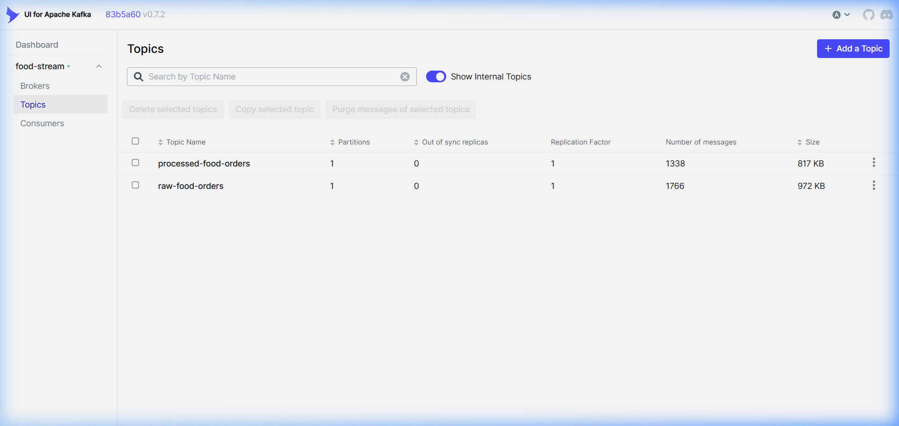
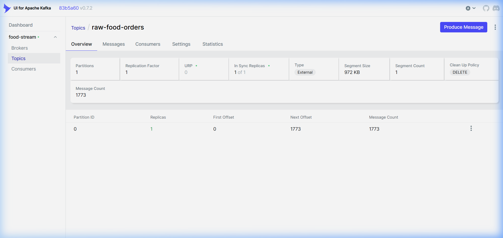

Message Broker
Apache Kafka — The Highway
Kafka acts as the central nervous system. The Python producer sends ~1 food order per second.
Kafka UI lets you watch the stream in real-time at localhost:8090.
Topic List — Two Kafka Topics
raw-food-orders (producer input) and processed-food-orders (Spark output → Pinot input)
localhost:8090 — Kafka UI Topics

Two topics active:
raw-food-orders receives events from the Python producer,
processed-food-orders receives enriched events from PySpark.
Pinot's REALTIME table subscribes to the second topic.
raw-food-orders — Topic Overview

Topic stats: Single partition, replication factor 1 (single-node dev setup).
The producer sends events with the
order_id UUID as the message key for deterministic partitioning.
Live Messages — Real Food Orders Streaming
Each message is a JSON-serialized food order event. Timestamps, UUIDs, city, cuisine, price — all real data from the running producer.
raw-food-orders — Live Message Stream (500+ messages consumed)

Live order events streaming at ~1/second. Each row is a JSON message with fields like
order_id, city, cuisine, price, status.
The preview column shows the raw JSON payload. Kafka retains these for 2 hours (configured in docker-compose).
🐍 How the Producer Works
Python · order_producer.py
# Generate a realistic Indian food order using Faker def generate_order() -> dict: cuisine = random.choice(["Indian", "South Indian", "Chinese", ...]) items = random.sample(CUISINES[cuisine], k=random.randint(1, 3)) status = random.choices(["placed", "preparing", "delivered", ...], weights=[...]) return { "order_id": str(uuid.uuid4()), "timestamp": int(datetime.now().timestamp() * 1000), # epoch ms "customer_name": fake.name(), # "Priya Sharma" (Indian locale) "city": random.choice(CITIES), # "Bangalore", "Mumbai", ... "cuisine": cuisine, "price": round(random.uniform(80.0, 1800.0), 2), "payment_method": random.choices(["UPI", "Credit Card", ...], weights=[...]), # ... 13 more fields } # Send to Kafka every 0.5–2 seconds producer.send(RAW_TOPIC, key=order["order_id"], value=order) time.sleep(random.uniform(0.5, 2.0))